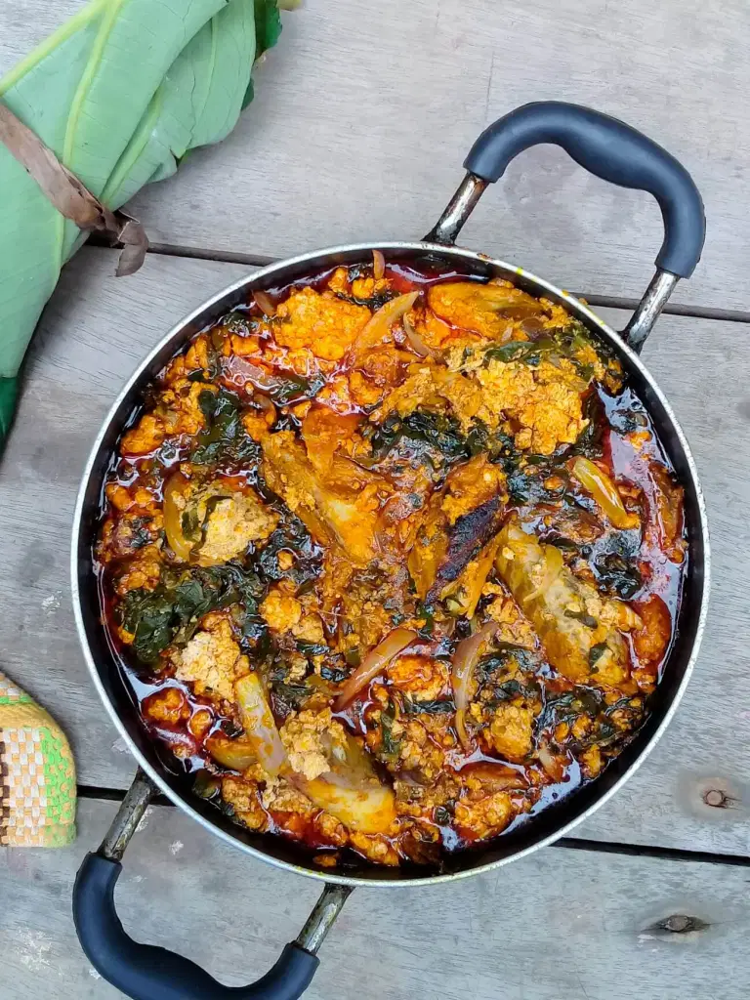

Kontomire

Kontomire stew with smoked salmon and melon seeds (Palava sauce)
Kontomire stew is a stew made from cocoyam leaves (known in the Akan
language as "kon-to-mi-re"), commonly prepared in the home and very
popular in Ghanaian cuisine. In Ghana, kontomire stew is served with
variety of dishes, including steamed rice, cooked yam and plantain
Ingredients
- kontomire leaves ( cocoyam leaves )
- small tomatoes
- turkey berrries
- onions
- pepper and salt
- salmon(medium sized)
- melon seeds(agushie)
- palm oil
- momoni
- shrimp
Steps
- Soak melon seeds in water, set aside. Wash kontomire leaves with a generous amount of salt to prevent itching of hands when cutting. Cut kontomire into desired stripes. Put the cut kotomire into a saucepan with little water and place on high heat. Cover and bring to a boil. Turn the kontomire after about five minutes of cooking to make sure everything is cooked through. Turn off fire and set aside.
- Blend two onions, tomatoes, pepper and turkey berries together, set aside. Remove the flesh of the salmon, break into two and remove the bones, break into desired sizes, set aside. Wash the soaked melon seeds and put into a blender. Add about ¼ teaspoon salt and just enough water to blend into a paste. Set aside. Slice the remaining onion.
- Pour palm oil into a medium saucepan, add half of the sliced onions and momoni if using. Fry till onions are softened. Add the blended tomatoes, onions, turkey berries and pepper. Bring to a simmer on medium heat. Add the salmon, salt and grounded shrimp if using. Cover and let simmer for 7 to 10 minutes till sauce is bare thickened.
- Add in the blended melon seeds, DO NOT STIR, cover and reduce heat to low. Let it simmer 8 to 10 minutes or till the blended melon seeds sets. Gently stir in the steamed kontomire. Add the remaining sliced onions, let simmer for about five minutes till onions are softened. Serve with yam, rice, cocoyam, cassava, plantains or sweet potatoes.